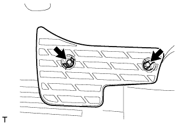
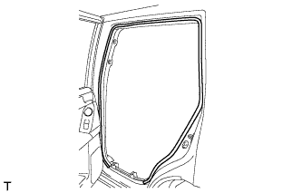
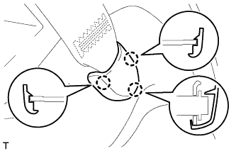
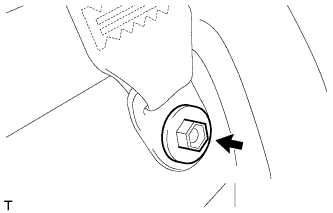
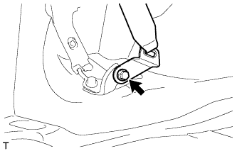

LUGGAGE SPEAKER > REMOVAL |
| 1. DISCONNECT CABLE FROM NEGATIVE BATTERY TERMINAL |
| Condition | Waiting Time |
| Vehicle enrolled in G-BOOK system | 6 minutes |
| Vehicle not enrolled in G-BOOK system | 1 minute |
| 2. REMOVE REAR NO. 2 SEAT ASSEMBLY (w/ Rear No. 2 Seat) |
Remove the rear No. 2 seat assembly (Click here).
| 3. REMOVE REAR NO. 1 SEATBACK ASSEMBLY |
for 60/40 Split Slide Walk-in Seat Type LH Side:
Remove the rear No. 1 seatback assembly (Click here).
for 60/40 Split Slide Walk-in Seat Type RH Side:
Remove the rear No. 1 seatback assembly (Click here).
| 4. REMOVE REAR NO. 1 FLOOR STEP COVER (w/ Rear No. 2 Seat) |
 |
Using a screwdriver, detach the 2 claws and remove the rear No. 1 floor step cover.
| *1 | Protective Tape |
| 5. REMOVE QUARTER SCUFF PLATE LH (w/ Rear No. 2 Seat) |
|  |
Remove the 2 bolts and quarter scuff plate.
| 6. REMOVE REAR DOOR SCUFF PLATE LH |
 |
Put protective tape around the rear door scuff plate.
Using a screwdriver, detach the 3 clips, 6 claws and 2 guides and remove the rear door scuff plate.
| *1 | Protective Tape |
| 7. REMOVE REAR DOOR OPENING TRIM WEATHERSTRIP LH |
|  |
Remove the rear door opening trim weatherstrip.
| 8. REMOVE OUTER LAP BELT ANCHOR COVER |
 |
Detach the 3 claws and remove the outer lap belt anchor cover.
| 9. REMOVE TONNEAU COVER ASSEMBLY (w/ Tonneau Cover) |
Remove the tonneau cover.
| 10. REMOVE REAR NO. 1 SEAT OUTER LAP BELT ANCHOR COVER |
|  |
Detach the 3 claws and remove the rear No. 1 seat outer lap belt anchor cover.
| 11. REMOVE NO. 1 LUGGAGE COMPARTMENT TRIM HOOK |
 |
Remove the luggage compartment trim hook by turning it clockwise.
| 12. REMOVE NO. 1 TONNEAU COVER HOLDER CAP (w/o Tonneau Cover) |
 |
Using a screwdriver, detach the 2 claws and remove the No. 1 tonneau cover holder cap.
| *1 | Protective Tape |
| 13. REMOVE FRONT DECK SIDE TRIM COVER (w/ Tonneau Cover) |
 |
Using a screwdriver, detach the 2 claws and remove the front deck side trim cover.
| *1 | Protective Tape |
| 14. REMOVE ASSIST GRIP PLUG (w/ Rear No. 2 Seat) |
 |
Using a screwdriver, detach the 2 claws and remove the assist grip plug.
| *1 | Protective Tape |
| 15. REMOVE ASSIST GRIP SUB-ASSEMBLY (w/ Rear No. 2 Seat) |
 |
Remove the 2 bolts and assist grip.
| 16. REMOVE DECK TRIM SIDE PANEL ASSEMBLY LH |
|  |
Remove the bolt and disconnect the rear No. 1 seat outer belt floor anchor.
|  |
Remove the bolt and disconnect the rear No. 2 seat outer belt floor anchor.
Remove the 2 bolts and 2 screws.
Detach the 3 clips and 8 claws.
Disconnect each connector and remove the deck trim side panel.

| 17. REMOVE STEREO COMPONENT AMPLIFIER ASSEMBLY WITH BRACKET |
| 18. REMOVE NO. 1 SPEAKER WITH BOX ASSEMBLY |
Disconnect the connector.
Remove the 5 bolts and No. 1 speaker with box.
| 19. REMOVE REAR QUARTER TRIM PANEL ASSEMBLY LH |
 |
Detach the 7 clips and 2 guides.
Disconnect the connector.
 |
Detach the 4 clips and 2 guides, pass the rear No. 2 seat outer belt floor anchor through the rear quarter trim panel and remove the rear quarter trim panel.
| 20. REMOVE REAR HEADER SPEAKER ASSEMBLY (for 14 Speakers) |
Disconnect the connector.
Remove the 2 bolts and rear header speaker.